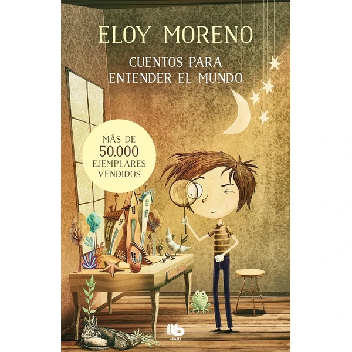

👶 10 años
Cuentos para entender el mundo
Una colección de historias breves en español e inglés que exploran temas importantes como la empatía, la diversidad y las emociones. Cada cuento es conciso y está especialmente pensado para lectores de esta edad, con un lenguaje accesible y mensajes significativos.
⭐
¿Por qué nos gusta?
- ✔Historias breves y con propósito educativo.
- ✔Texto en español e inglés para aprender idiomas.
- ✔Temáticas que generan conversaciones importantes.
💬
Lo que más destacan las familias
Muchos padres comentan que les encanta la estructura del libro, que permite leer una historia corta sin sentir que falta contexto. Las familias bilingües especialmente valoran la versión dual en español e inglés.